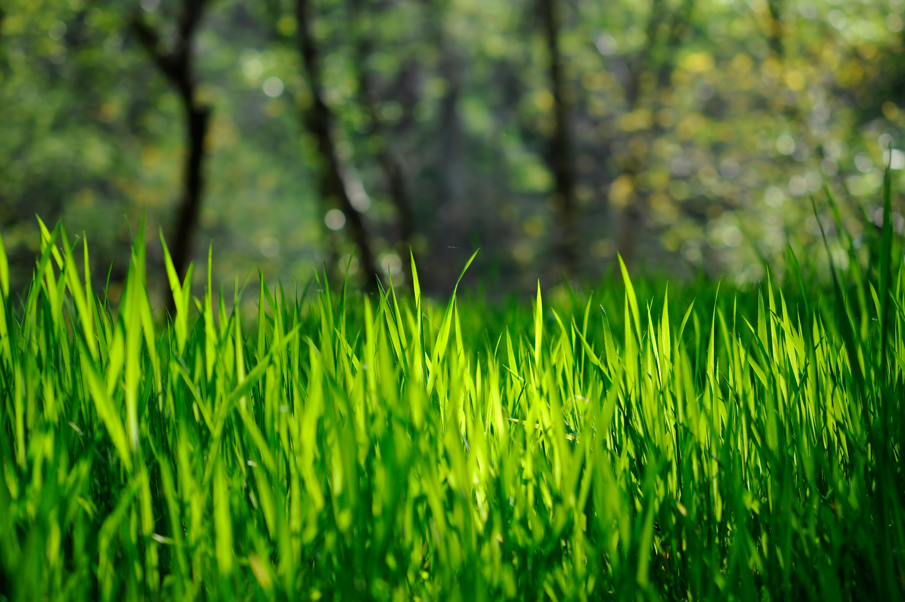
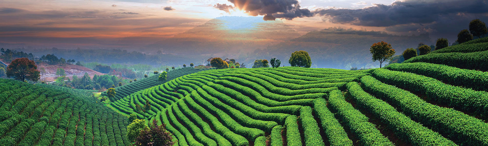

Omul este creația Naturii. Pe tot parcursul evoluției Natura a fost cel mai bun prieten al Omului, astăzi, însă, oamenii aleg să-și umple viețile și mediul înconjurător cu obiecte artificiale, care îi distrug creatorul.
Omul şi Natura trebuie să co-existe într-o armonie perfectă. Natura îi oferă fiinţei umane forţa de care acesta are nevoie pentru a supravieţui, iar omul, la rândul său, ar trebui să fie profund recunoscător şi să-i asigure o protecţie permanentă.
Împreună putem fi mai conștienți, iar acest site poate servi ca un ghid pentru oamenii care vor să înceapă un mod de viață mai ecologic. Dacă ne apropiem de Natură, ne amintim și de noi înșine.
Fii verde! Fii tu, însuți!